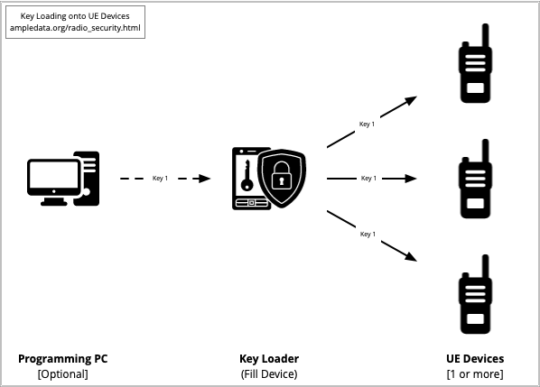
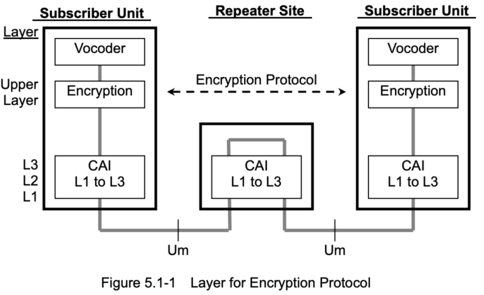

This article is a review of the security features of various Land Mobile Radio Systems available presently. There are many communications products that offer features labeled as 'secure', and there are just as many notions of what 'secure' means. I will develop a rubric through which the user of a Land Mobile System can select the features of a System that make it 'secure' to them.
One of the primary uses of LMR systems is for Push-to-Talk voice communication, where human voice is the medium. Most LMR systems do not protect this medium in any way, sending messages in the clear for anyone to intercept & hear. For users who need to protect their messages from interception, they may choose a security feature that offers some privacy guarantee. Many of the same users also need to ensure the identity of other users on the System, so will choose a security feature that authenticates users of the system.
Potential threats to LMR systems include the ability to intercept any user's transmissions, which is easily achieved with commercial-off-the-shelf equipment. Often secondary-market devices are available that can be configured to act as users of a System, giving the operator the ability to intercept and send messages. Finally, edge devices like hand-held walkie-talkies can be easily misplaced, lost, or stolen, allowing an attacker to have direct access to the System.
Almost every LMR system is susceptible to interference, both deliberate and accidental. This can vary in range from a hobby kit for kids, to some nearby electronic noise source.
Assumptions
Assets
Threats
A dimension to take into consideration is that, unlike an IP network where the underlying protocol is built around multiple-access, LMR systems can vary in how they implement multiple-access, if at all. What this means is that an IP network can have several devices sharing the same basic transport (IP over Ethernet, or IP over WiFi for example), the Radio Frequencies and systems that operate LMR can be configured to share this transport using different methods.
For example, a single LMR radio frequency can be shared among multiple users by implementing a access-control mechanism like CTCSS or DCS. With these mechanisms, only users sharing the same 'Code' can hear each other. However, this does not inhibit other users from hearing them, nor does it inhibit the channel from being used by other users, sometimes simultaneously. This can lead to both Availability issues, or Confidentiality issues (C-i-A). Additionally, CTCSS & DCS codes are not private, so any other user can re-use the same code, defeating the Integrity property (c-I-a).
A Key Loader, also sometimes called a Fill Device, is a device used to load cryptographic keys onto an encryption device. In the case of LMR systems that implement private-key crytography, such as DES & AES, Key Loaders are filled with key material and then physically attached to EU devices to install the private keys.
Of immediate concern to anyone implementing a system that requires a Key Loading is the security of the private keys themselves. Potential threats to these the private key assets start with the physical security of the Key Loader, but also include any other systems or modules in the private key loading pipeline. For example, a computer may be used to generate or transfer the private keys, introducing various computer security vectors into the threat model. Extreme care should be taken.

TK
Oona Räisänen has an excellent write-up of Analog Voice Inversion in her blog:
it inverts the audio spectrum of a signal, making the lowest frequencies the highest and vice versa. It is not considered encryption;
Voice Inversion is true security-through-obscurity and offers protection from only passive interception (that is, someone accidentally tuning to your frequency). Under an active attack, the 'key space' for Voice Inversion varies between 8 and 16 'codes', and can easily be descrambled on a receiver with either a matching code programmed in, or with a tool like deinvert.
This section adopted from the following specifications:
- NXDN Technical Specifications, TS 1-D Version 1.3. JVC KENWOOD Corporation and Icom Incorporated.
Kenwood NEXEDGE is a commercial implementation of the NXDN open standard for LMR. Many Kenwood NXDN-compatible radios offer compatibility with other LMR systems, such as DMR, dPMR, P25, and conventional analog. For the purpose of this evaluation we're focusing on the NXDN portion of these devices.
The NXDN specification describes three levels of 'encryption algorithm' security:
Both "Low Guard" & "High Guard" encryption happen immediately after the Vocoder stage on the transmitting side, or immediately before the Vocoder stage on the receiving side. With encryption & decryption happening early in the voice processing stage, this ensures that lower layers of the NXDN CAI lack access to the Plaintext.

Scramble Encryption offers a 32,767-key key-space for both voice & data.
NXDN DES uses a 56-bit key length. Keys must be pre-loaded onto devices before use, and are identified by a pre-shared Key ID. The 64-bit Initialization Vector within the DES OFB is seeded with random data, with the generation method left up to the party implementing the protocol. Initialization Vector values are synchronized within the same frame as the shared Key ID.
VCALL_IV message content:
2 bits 6 bits 64 bits +-----------+------+---------------------+ |Cipher Type|Key ID|Initialization Vector| +-----------+------+---------------------+